| 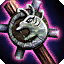 | |||||||||
|---|---|---|---|---|---|---|---|---|---|
| 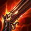 | 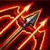 | 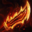 | |||||||
| 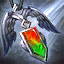 | 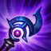 | ||||||||
| 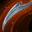 | 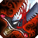 | ||||||||
| 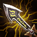 | |||||||||
| 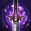 | |||||||||
| 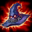 |
Varázstárgyak
Alaptárgyak
Sodronyozott mellény
+25.0 páncél
Reflexíj
+15% támadási sebesség
Istennő könnycseppe
+20.0 mana
Negatron palást
+25.0 varázsellenállás
Bokszkesztyű
+10% kitérési esély
+10% kritikus csapási esély
Spatula
Biztos tud valamit...
K.N. kard
+15 sebzés
Az óriás öve
+200.0 életerő
Feleslegesen nagy pálca
+20.0% varázserő
Fejlesztett tárgyak
Rabadon halálsüvege
Viselője 75% varázserő-növelést kap.(Az általa szerzett összes varázserő-bónusz 75%-kal nagyobb lesz.
Határtalan penge
+125% kritikus csapási sebzést biztosít a viselőjének
Fagyos szív
25.0%-kal csökkenti a környező mezőkön álló ellenfelek támadási sebességét.
A fény talizmánja
A viselője egyben Fény is
(Egyedi – Hősönként csak egy)
Csitt
Az alaptámadások találat esetén 33% eséllyel elnémítják az ellenfelet, 4.0 másodpercre megakadályozva őt a manaszerzésben.
Megváltás
Amikor a viselője életereje 30% alá csökken, a közeli szövetségesek 1200 életerőt nyernek vissza egy 2,5 másodperces késleltetést követően. A hatás harconként egyszer aktiválódik.
Vadászmellény
A viselője egyben Őrző is
(Egyedi – Hősönként csak egy)
Zefír
A csata kezdetén a viselő megidéz egy forgószelet az aréna ellenkező oldalán, amely 6 másodpercre kivonja a harcból az első elért ellenfelet.
(Egyedi – Hősönként csak egy)
Mágusok sapkája
A viselője egyben Mágus is
(Egyedi – Hősönként csak egy)
Zeke hírnöke
A csata kezdetén a viselő és az ugyanabban a sorban, legfeljebb 2 mező távolságra lévő szövetségesek +15.0% támadási sebességet kapnak a harc idejére.
Tolvajkesztyű
A tervezési fázisok elején a viselője 2 ideiglenes tárgyat kap. Az ideiglenes tárgyak ereje a játékos szintjétől függ.
(Három tárgyhelyet foglal el)
Guinsoo dühpengéje
Viselőjének az alaptámadások +4% bónusz támadási sebességet biztosítanak a harc végéig. A hatás korlátlanul halmozható.
Ionos szikra
Viselője 90.0 tényleges sebzést okoz az ellenséges hősöknek, amikor elsütnek egy varázslatot.
Sárkánykarom
50.0%-kal csökkent minden elszenvedett varázssebzést.
Fantomtáncos
A viselője kitér az összes kritikus csapás elől.
(Egyedi – Hősönként csak egy)
Csapdakarom
A viselőt egy pajzs veszi körül, amely kivédi az őt eltaláló első ellenséges varázslatot. A pajzsot áttörő ellenfél 4.0 másodpercre elkábul.
Tüskevért
Amikor a viselőjét eltalálja egy alaptámadás, a csökkentett sebzés 100%-át varázssebzésként veri vissza a támadóra.
Jégkesztyű
Amikor a viselője kitér, egy fagyos zónát hoz létre. A zónában tartózkodó ellenfelek támadási sebessége 35%-kal csökken.
Youmuu szellemkardja
A viselője egyben Orgyilkos is
(Egyedi – Hősönként csak egy)
Óriásölő
A viselő alaptámadásai a célpont aktuális életerejének 8%-ával megegyező mértékű további fizikai sebzést okoznak.
Vörös erősítés
A viselő alaptámadásai lángba borítják a célpontot, amely 10 másodperc alatt a maximális életerejének 20%-ával egyenlő tényleges sebzést szenved el. Az égés megakadályozza a célpont gyógyulásának 80%-át.
Az igazság ökle
A tervezési fázisok elején a viselője megkapja a következők egyikét:
Az alaptámadások és a varázslatok +50% sebzést okoznak
Az alaptámadások 50 életerőt gyógyítanak találatkor
Őrangyal
Ha a viselője meghal, eltávolít róla minden negatív hatást, és 2 másodperc késleltetéssel legfeljebb 400 életerővel feltámasztja. A hatás harconként egyszer aktiválódik.
A szeráf ölelése
Viselője a varázslata elsütése után azonnal visszanyer 20 manát.
Jégkalapács
A viselője egyben Jégkori is
(Egyedi – Hősönként csak egy)
Runaan hurrikánja
Az alaptámadások egy további lövedéket lőnek ki, amely a viselő sebzésének 60%-ával egyenlő sebzést okoz, és alkalmazza a találati hatásokat.
Vérszomjas
Viselője alaptámadásai az okozott sebzés 40%-át életerőként töltik vissza neki.
A tűzcsóva parazsa
A viselője egyben Tűzcsóva is
(Egyedi – Hősönként csak egy)
Titánhidra
Az alaptámadások a viselő maximális életerejének 3.0%-ával egyenlő további varázssebzést okoznak a célpontnak és a mögötte lévő közeli ellenfeleknek.
Dühöngők fejszéje
A viselője egyben Őrjöngő is
(Egyedi – Hősönként csak egy)
Shojin lándzsája
Viselőjének alaptámadásai a varázslata elsütése után visszatöltik a maximális mana 18%-át.
Luden visszhangja
Amikor a viselője sebzést okoz a varázslatával, akkor az elsődleges célpont és legfeljebb 3 közeli ellenfél 150.0 további varázssebzést szenved el.
Az iron solarik medálja
A csata kezdetén a tárgy viselője és az ugyanabban a sorban, legfeljebb 2 mező távolságra lévő szövetségesek 8.0 másodpercre egy 300.0 sebzést elnyelő pajzsot kapnak.
Morellonomikon
Amikor a viselője sebzést okoz a varázslatával, lángba borítja a célpontot, amely @BurnDuration@ másodperc alatt a maximális életerejének 20%-ával egyenlő tényleges sebzést szenved el. Az égés megakadályozza a célpont gyógyulásának 80%-át.
(Egyedi – Hősönként csak egy)
Gyorstüzelő ágyú
A viselője +100% támadási hatótávot kap.
Kardtörő
Viselője alaptámadásai 33% eséllyel 3.0 másodpercre lefegyverzik a célpontot, aki így nem hajthat végre alaptámadásokat.
A letaszított király kardja
A viselője egyben Kardmester is
(Egyedi – Hősönként csak egy)
Drágaköves kesztyű
A viselő varázslatai kritikus csapást okozhatnak.
(Egyedi – Hősönként csak egy)
Ismétlő számszeríj
Viselője halálakor az Ismétlő számszeríj egy új szövetségeshez kerül. Az Ismétlő számszeríj minden újrafelvételkor további +30% támadási sebességet és +30% kritikus csapási esélyt biztosít a csata hátralévő idejére. A hatás korlátlanul halmozható.
(Egyedi – Hősönként csak egy)
A természet ereje
Viselője csapatának maximális létszáma +1 fővel növekszik.
Higany
A viselőt pajzs veszi körül, amely kivédi a következő tömegirányító hatást. A pajzs 3 másodpercenként megújul.
Halálpenge
Amikor a viselője megöl valakit, vagy részt vesz egy ellenfél megölésében, +15 sebzést kap a csata hátralévő idejére. A hatás korlátlanul halmozható. Kezdetben 1 jelzője van.
Warmog vértje
Viselője a hiányzó életereje 6.0%-át tölti vissza másodpercenként.
Statikk töltőpengéje
Viselője minden harmadik alaptámadása 3 ellenfélnek 100.0 varázssebzést okoz.
Hextech lőpenge
Viselőjének az alaptámadások és a varázslatok az okozott sebzés 25%-át életerőként töltik vissza.